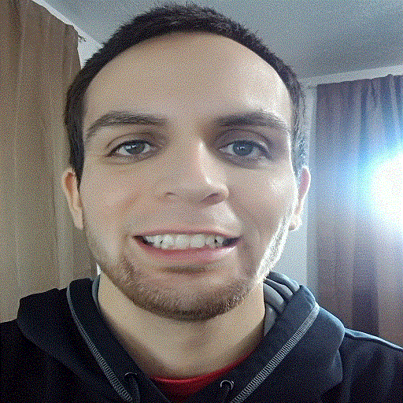

Shading and Lighting
Hayden Shelton CS 4600 Fall 2015
Sorry. Your browser doesn't support WebGL.

Light: X
Light: Y
Light: Z
Light: Intensity
Eye: X
Eye: Y
Eye: Z
direction
At : X
At : Y
At : Z
Texture Blend
Follow Viewer
Fragment Lighting
(vertex is default)
Use Trackball For Eye
Theta
Phi
Radius